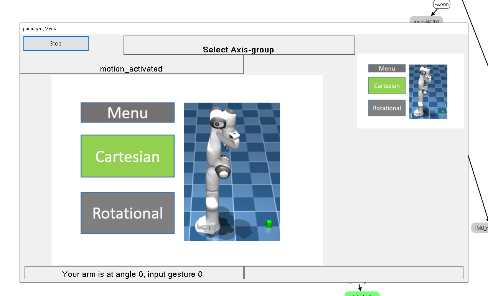
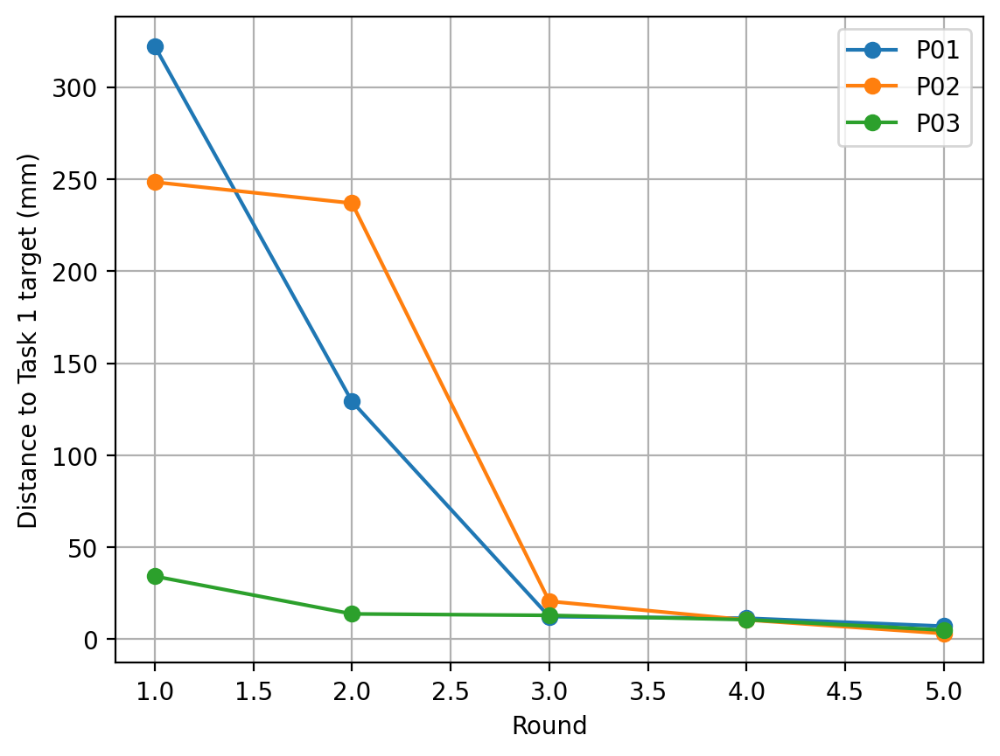
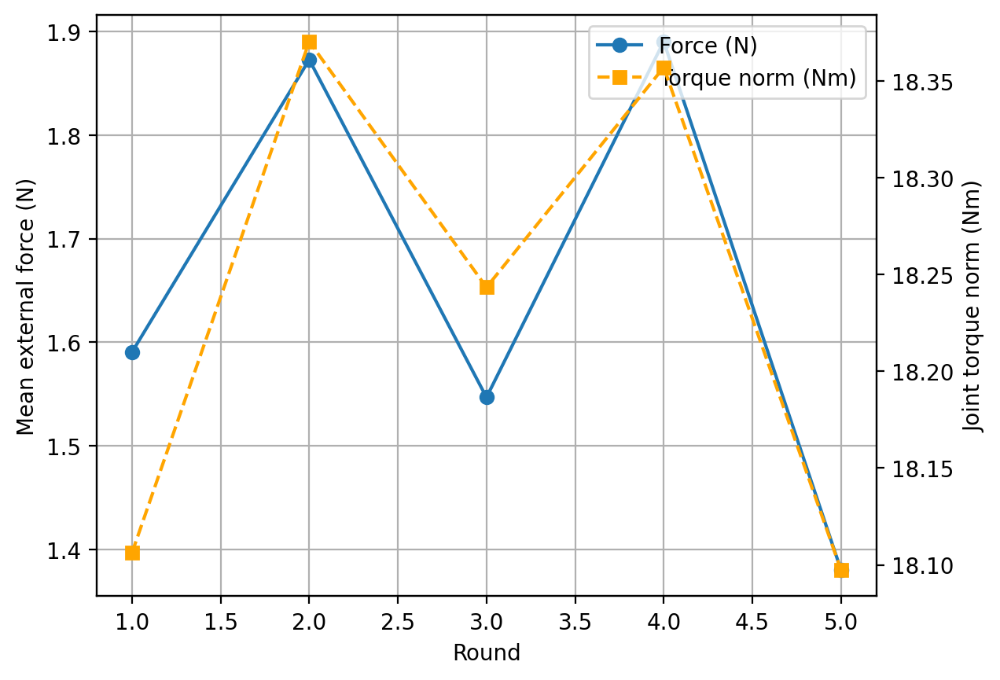

Measured Robotics Results & Engineering Impact
This page presents measurable outcomes from my robotics work, including simulation-to-real control, robot-policy evaluation, manipulation accuracy, contact behavior, regression detection, scene-aware planning, and deployment decisions.
100%
Task Success Rate in the evaluation demo
Measured over five episodes in the Robot Eval Platform demonstration.
20.8 ms
Mean Candidate Control Latency
A regression of 3.6 ms, or 21%, compared with the 17.2 ms baseline.
BLOCK
Automatic Release-Gate Decision
The candidate was blocked because it violated the latency regression rule despite completing the task successfully.
Robot Eval Platform — Regression-Gating Outcomes
- Converted automated rollouts into metrics, videos, and reports for each run.
- Compared locked baselines with candidate controllers and produced an explicit SHIP / BLOCK decision.
- Reported the exact rule responsible for blocking a candidate, supporting traceability and auditability.
- Integrated release gating with CI workflows so a performance regression can fail deployment checks.
Gate rules used in the demonstration
- Success rate must be at least equal to baseline
- Mean control latency must not exceed baseline
- Safety violations must remain zero
This decision layer prevents silent regressions from progressing toward real-robot deployment.
Evidence — Screenshots and Demo Video
Evaluation and regression-gating demonstration
Run execution → rollout video → evaluation metrics → artifacts → SHIP / BLOCK decision.
Key screenshots


Natural-Language Franka Agent — State-Aware Manipulation
3.8 mm
Held-Object Placement Error
A held blue cube was placed on the purple cube with approximately 3.8 mm XY placement error.
8
Persistent Scene Objects
Eight colored cubes remain available across consecutive natural-language commands.
PASS
Blocker-Aware Pick Execution
When a requested cube was blocked from above, the planner removed the blocker before picking the target cube.
- Persistent natural-language command execution in NVIDIA Isaac Sim
- Pick, hold, release, place, and cube-on-cube stacking
- Scene-graph-based detection of cubes above a target object
- Source-stack and occupied-destination handling
- Temporary buffer movements for rearrangement conflicts
- Procedural generation of letters and digits from font geometry
- Per-step verification of XY and Z placement errors
Natural-language instruction ↓ Intent or character extraction ↓ Procedural / state-aware plan ↓ Current-scene analysis ↓ Source-blocker and destination-occupancy handling ↓ Isaac Sim manipulation execution ↓ Per-step placement verification
Persistent manipulation-agent demonstration
Natural-language commands are converted into validated plans and executed by a persistent Franka robot scene.
Franka FR3 — Gesture-Driven Control and Sim-to-Real Validation
3.06 mm
Best Final Reach Error
Participant P02 achieved 3.06 mm final positioning error during Task 1, Trial 5.
98.8%
Reach-Error Reduction
P02 reduced positioning error from 248.40 mm to 3.06 mm across five trials.
38.94 N
Maximum Recorded Contact Force
P01 reached a peak of 38.94 N during the threaded insertion and screwing task.
- Gesture-based interface using EMG and IMU signals
- Axis selection and command execution using a lock-and-unlock interaction state machine
- Cartesian translation and orientation commands through Jacobian and inverse-kinematics-based control
- Validation in both MuJoCo and a real Franka FR3 robot
- Free-space reach testing and contact-rich screw insertion
- Measurement of end-effector error, force, torque, and rotational alignment
EMG / IMU signals ↓ Filtering, features and classification ↓ Interaction state machine ↓ Axis and direction command ↓ Cartesian / rotational controller ↓ MuJoCo validation ↓ Real Franka FR3 deployment
Objective thesis-results snapshot
| Participant |
Task 1 Reach Error Trial 1 → Trial 5 |
Error Reduction | Task 2 Force Range | Task 2 Rotation Error |
|---|---|---|---|---|
| P01 | 322.27 mm → 7.05 mm | Approximately 97.8% | 4.46–38.94 N | ≤ 0.32°, then near 0° |
| P02 | 248.40 mm → 3.06 mm | Approximately 98.8% | 1.61–26.64 N | 0–0.15° |
| P03 | 34.16 mm → 4.91 mm | Approximately 85.6% | 15.11–20.86 N | 0–0.07° |
For the contact-rich screwing task, force, torque, and rotational alignment provide more useful evidence than positional error alone.
Evidence — Gesture Interface, MuJoCo and Real FR3
MuJoCo simulation demonstration
Gesture-driven interface and Cartesian command execution in simulation.
Real Franka FR3 deployment
The gesture-driven control workflow transferred from simulation to the real Franka FR3.
Interface, experiment and result evidence




What I Optimize For
- Measurable progress: repeatable experiments and clearly defined metrics
- Stability and safety: limits, smooth control, and predictable behavior
- Failure visibility: traceable failure causes rather than only success labels
- Deployment readiness: explicit validation checks before real-world execution
- Efficient iteration: simulate → evaluate → diagnose → improve